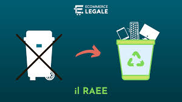

Come Smaltire i RAEE
Il corretto smaltimento dei RAEE è fondamentale per ridurre l'impatto ambientale. Ecco alcune linee guida su come smaltire i RAEE:
- Porta i tuoi RAEE ai centri di raccolta specializzati.
- Utilizza i servizi di raccolta del comune.
- Rivolgiti a rivenditori che offrono il ritiro dell'usato all'acquisto di nuovi apparecchi.
Per maggiori dettagli, puoi consultare il sito web del Consorzio RAEE, che fornisce informazioni sui punti di raccolta e le modalità di smaltimento.
Secondo il Global E-waste Monitor 2020, solo il 17,4% dei rifiuti elettronici prodotti nel 2019 è stato ufficialmente raccolto e riciclato. È quindi essenziale migliorare la gestione e il riciclo dei RAEE.